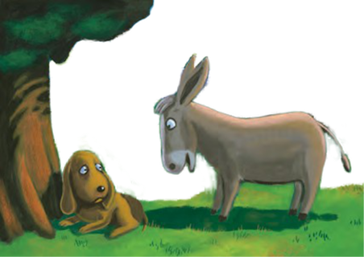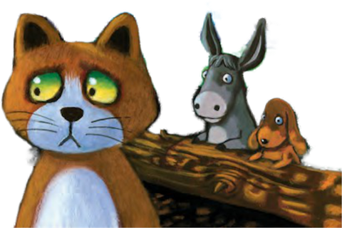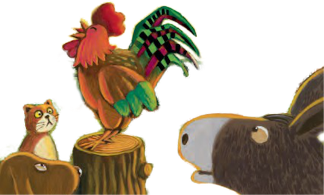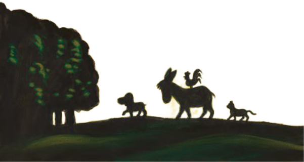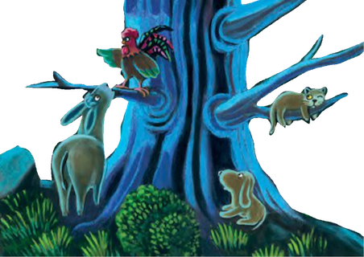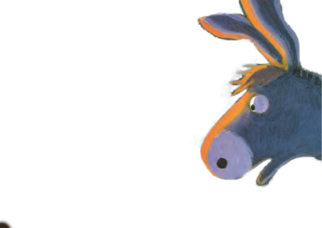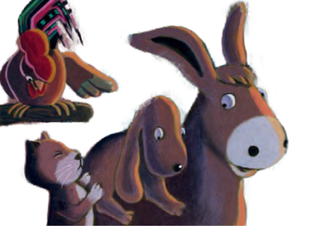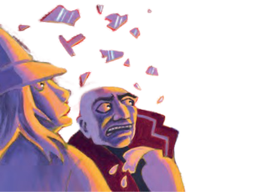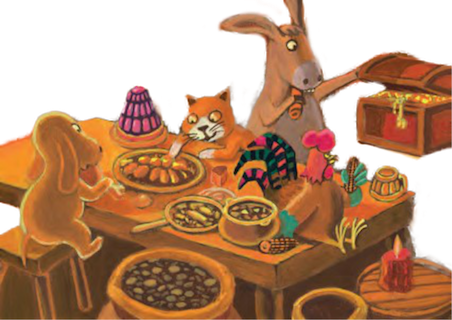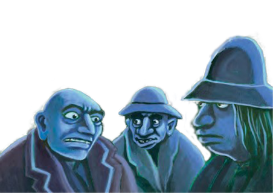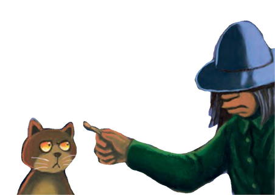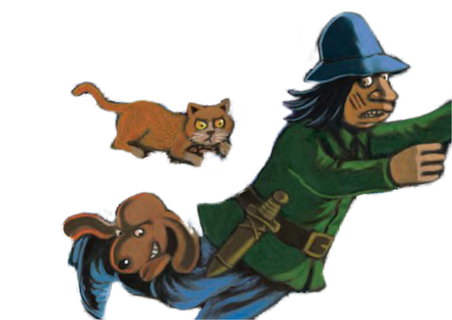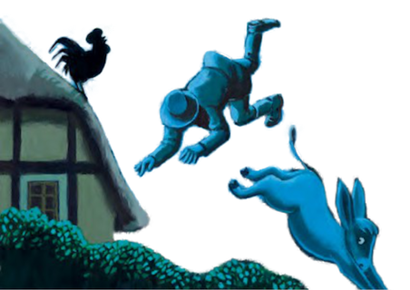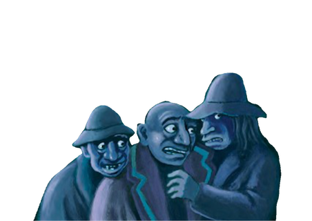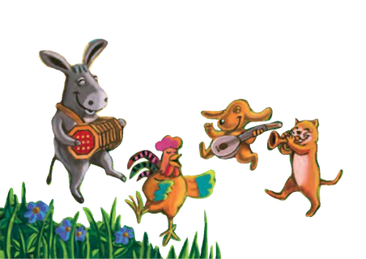
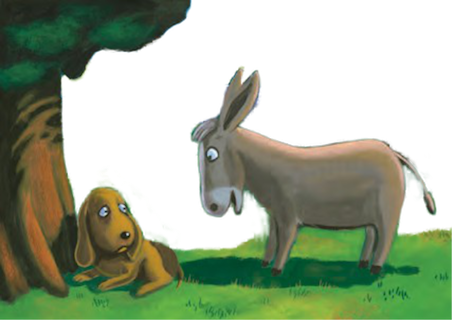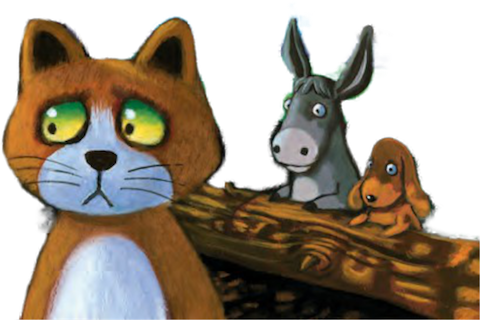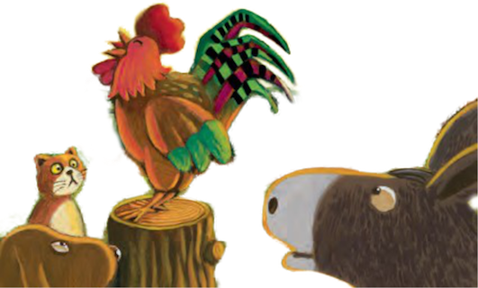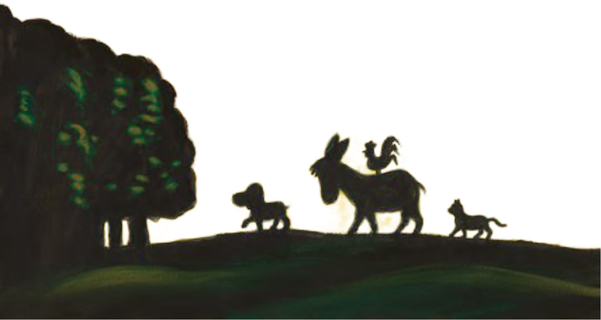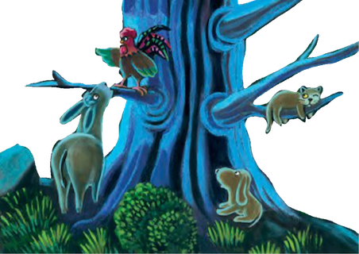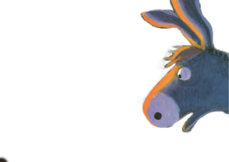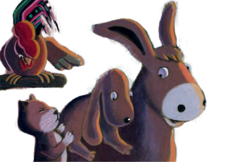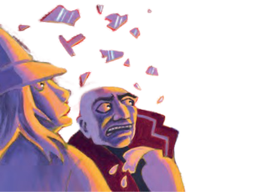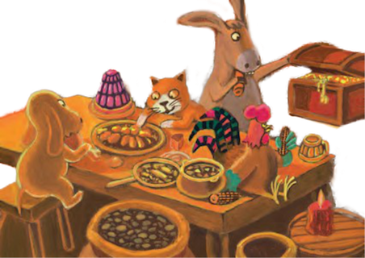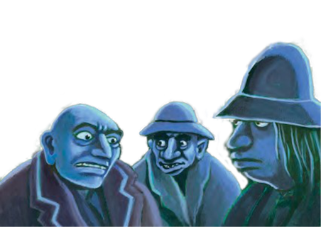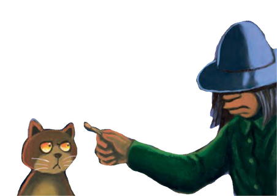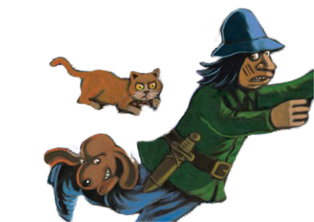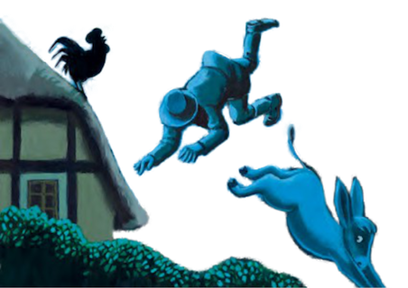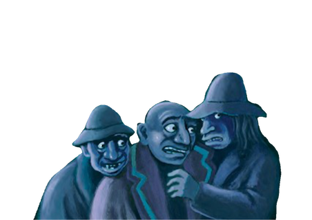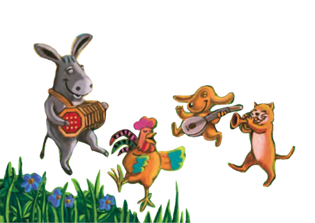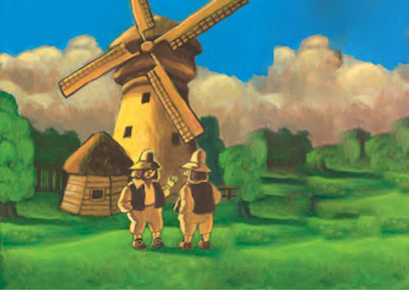
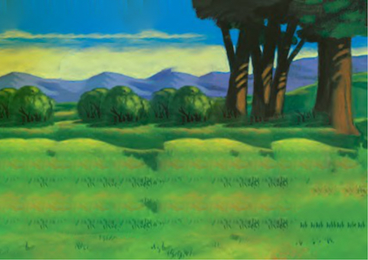
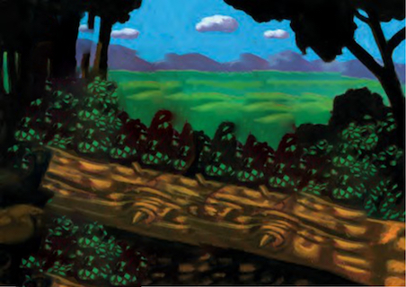
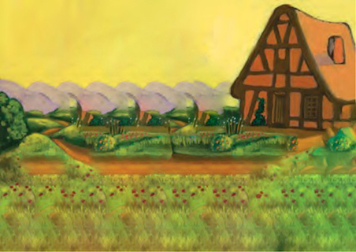
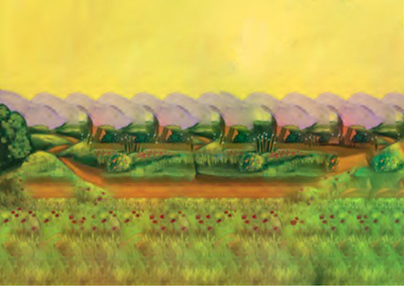
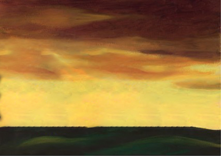
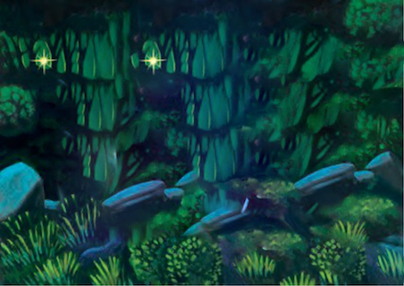
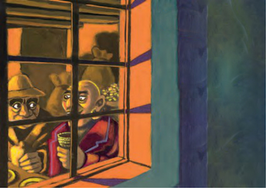
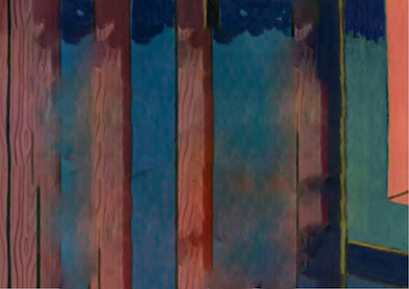
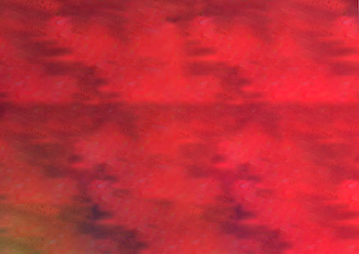
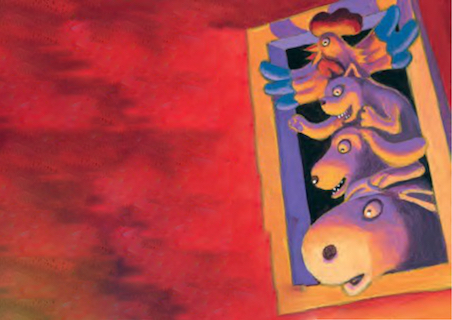
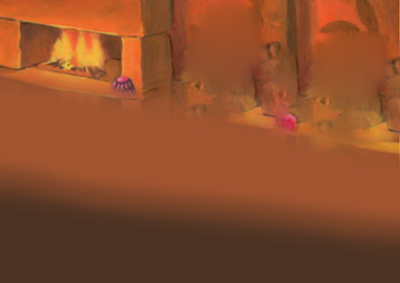
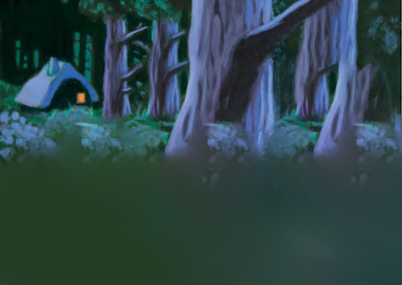
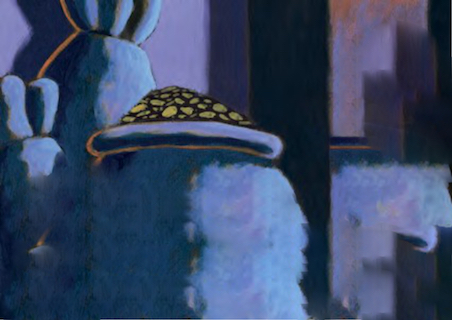
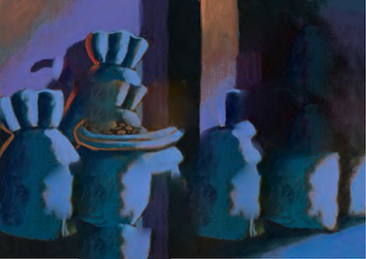
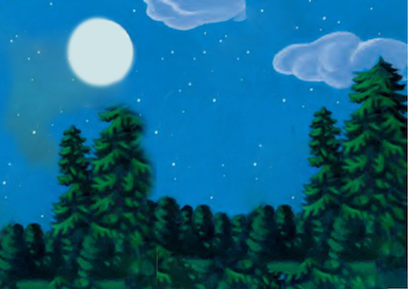
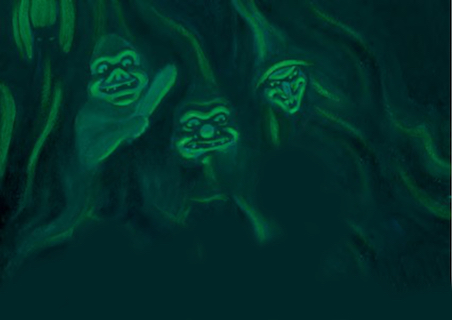
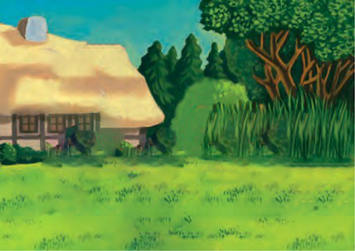
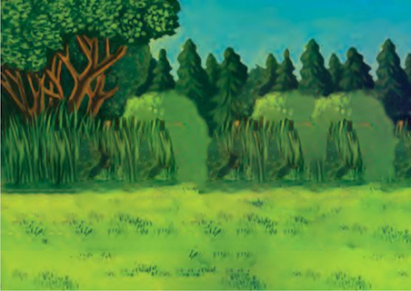
Bir eşek, bir köpek, bir kedi ve bir horoz yaşarmış...
1.
Bir eşek, sahibi için yıllarca, bıkıp usanmadan sır9nda un çuvalları taşımış.
Bir gün, eşeğin sahibi olan değirmenci, arkadaşlarından birine şöyle söylemiş :
-Bu eşekçokyaşlanmış,bunuyok etmemlazım! Bunuduyaneşek düşünmüş: Benki enkısa zaman içinde dinlenme sevinci yaşarken ! Eniyisidahazamanvarken kendimi kurtarayım. Duydumki Bremen şehrindemüzisyen arıyorlarmış, oraya gidip şehir bandosuna katılırım. Ormana yaklaş9ğında, bir inleme sesi duyar
2.
Ağacın al9nda uzanmış bir av köpeğiydi. Eşek ona sorar :
-Değerli arkadaşım, neden ağlıyorsun? Köpekcevapverir:
-Ne yazık ki ava gitmeyi sevmiyorum, ormandaki hayvanlarla oynamayı tercih ediyorum.
Bu sabah sahibim beni öldürmek istedi. Ben de kaç9m ama şimdi nerede yiyecek bulabilirim ?
-Benimlen gel !
Duydum ki Bremen şehrinde
müzisyen arıyorlarmış, orada, şehir
bandosunakatılalım. Vesonuçta,
köpek önde , eşek arkada birlikte yola
koyulmuşlar. Çok üzgün bir miyavlama sesi duyunca aniden durmuşlar .
3.
Ağlayıp inleyen bir kediydi.
-Ne oldu ? niçin bu kadar üzgünsün ? diye sordu eşek.
-Ne yazık ki ! fareler benimlen çok kötü olmaya başladılar.Kendimi onların kötülüklerinden korumak için ateşin kenarında uzanmayı tercih ediyordum.Ama bu sabah sahibim benim bu durumumdan pek hoşlanmadığıiçinbeni boğacaktı.Kendimikurtardım,ama şimdineolacak benimhalim?
-Bizimlen gel ! duydum ki Bremen
şehrinde müzisyen arıyorlarmış,
orada ,şehir bandosuna katılalım.
Vesonuçtaköpekönde, eşek
arkada vekedi deonlarıtakip
ederekyolakoyulmuşlar. Birçiftliğinönündengeçerken...
4.
Birhorozun var gücüyle acı acı «KUKKURUKUK! KUKKURUKUK! «diyeöttüğünü duyuyor- lar.
-Hayda ! kulaklarımızı patlaVn, hiç böyle acı acı öten horozu duymadık !
-Şimdilik gücümün yettiği kadar ötüyorum.Sahiplerim, onları, bir daha sabahın köründe uyandırmayayım diye beni kesip yemeye karar verdiler ! «KUKKURUKUK !
KUKKURUKUK !»
-Bizimlen gel, duydum ki Bremen şehrinde müzisyen arıyorlar, orada birlikte şehir bandosuna katılırız.
5.
Ve s o n u ç t a k ö p e k ö n d e , e ş e k
sırtında horozla arkada ve kedide
onları takip ederek yola
koyulmuşlar. Amaşimdiakşam
karınlığı çöker.
-Kedi, gidip ağaçların al9nda barınalım der.
6.
Herbiribirbüyükağacın etrafındakendilerinegöreyer bulupyerleşirler. Horozkendine uygun ağacın en güzel dalını seçer ve arkadaşlarına seslenir :
-Bir ışık görüyorum ! Bu belki bir ev olabilir !
-Hadi gidelim ! dedi köpek esneyerek. Hepimiz acız.
-Kedi, sıcak bir yerde uyumak istiyorumdedi. Vehepbirlikte yola koyuldular.
-Gördüklerim tüylerimi ürper]yor !
-Nedir ?
7.
-Eşek,birguruphaydutdiye fısıldıyor.Altınlarınıçuvallara koymuşlarveengüzel yemeklerle döşenmişyemek masasının etrafında eğlence yapıyorlar !
-Köpek, sarkık dudaklarını yalayarak, bende dişlerimin arasına bir şeyler koymak isterdim, der.
-Kedi, ah bizde onların yerinde olsaydık, diye iç çek].
-Horoz, bir fikrim var, gidip onları korkutalım der !
8.
-Köpek sen eşeğin sırtına, kedi köpeğin sırtına ve bende kedinin kafasına çıkayım. Sonra hep birlikte çok sesli bir şekilde şarkı söyleyelim !
Benim işare]me dikkat, bir, iki . . .
9. -...Üç !
Hepsi birlikte pencereye var gücüyle dayanınca, camlar kırılıyor ve pencereden içeri atlıyorlar. Vehaydutlar, hortlak gördüklerini sanıp,korkudan ormana doğru hızla kaçıyorlar.
10.
Bir süre sadece ateşin çıtırtılı sesi duyuluyor, karınlarını hırsla doyurmakla meşgul olan hayvanlar, konuşmayazaman bulamıyorlar.
-Eşek, ben gidip dışardaki gübre yığınına yakın bir yerde uyuyacağım dedi.
-Köpek, ben gidip kapının arkasında uyuyacağım dedi.
-Kedi, ben gidip ateşin kor közleri daha sıcak ken yanında uyuyacağım dedi.
-Horoz, bende gidip ça9daki horoz tüneğinde uyuyacağım dedi.
11.
Bir süre sonra, haydutlar orman da soğuktan üşüyüp, titremeye başlamışlar. İçlerindenbaşkanları yüksek bir sesle :
-Ah, ne kadarda hayvanız, kendimizi kendi evimizde kapı dışarı etmememiz gerekirdi !
-Haydutlardan biri,çok haklısın şekm diye, cevap verdi.
-Şimdi evde neredeyse hiç ışık yok,
sen hepimizden güçlü olduğuna
göre, gidiporadanelerolduğuna
bakıp, gelip bize anlatabilirsin.
Haydut ayak parmaklarının ucuna
basaraktan yavaşça eve girer. -Vay
vay ! közler daha sıcakken ateşi
yakayım, böylelikle etrae biraz
daha iyi görebilirim. Karanlıktaki
köz diye gördüğü ışığa eğilir, ama ne görsün ...
12.
O ışık, kedi nin gözleriydi !
Kedi hızla haydutun üzerine atlar ve yüzünü 9rnaklar.
Haydut dehşetle kapıya koşar.Ama ne görsün...
13.
-Grıııı ! Köpek , haydutun bacağına yır9cı bir sekilde saldırır.
-Al sana güzel bir tekme atayımki daha hızlı koşabilesin, der eşek.
14.
Horozun çok gürültülü ötmesi, hırsızın korkusuna korku katar.
-Kukkurukuk ! kukkurukuk !
15.
Haydut ormanda bekliyen suç ortaklarını görüp , onlara neler olduğunu anla9r :
-Evde bir cadı vardı, çengel gibi tırnaklarıyla beni tırnakladı. kapının önünde kıllı bir cüce bacağımıısırdı. Evin bahçesinde siyah bir dev, büyük bir sopayla bana öyle vurduki havalara erladım.
Ça9da bir şeytan koçaman kanatlarını açmış : yakalayın
onu ! yakalayın onu ! diye bağırıyordu. -Büyükşeâeri, burada kesinlikle kalamayız ! Bir an önceburadankaçmalıyız! dedi. Böylece ortadan kayboluyorlar ve onlarıbirdahaaslagörmüyorlar. Ya bizim dört Bremen müzisyenlerimiz ?
16.
O küçük evde kendilerini o kadar rahat hissediyorlarki, oraya hiç ayrılmamak şar9yla yerleşiyorlar.
...Eğer bir gün Breme sokağından geçerseniz, orada dört müzisyenin, çok mutlu bir şekilde yaşadığıküçükevi görebilirsiniz.Belkide sizi konserlerine davet ederler:
Ai, Ai ! Hav ! Hav ! Miyav ! Miyav ! Kukkurukuk ! Kukkurukuk ! (Çocuklarla birlikte)
SON